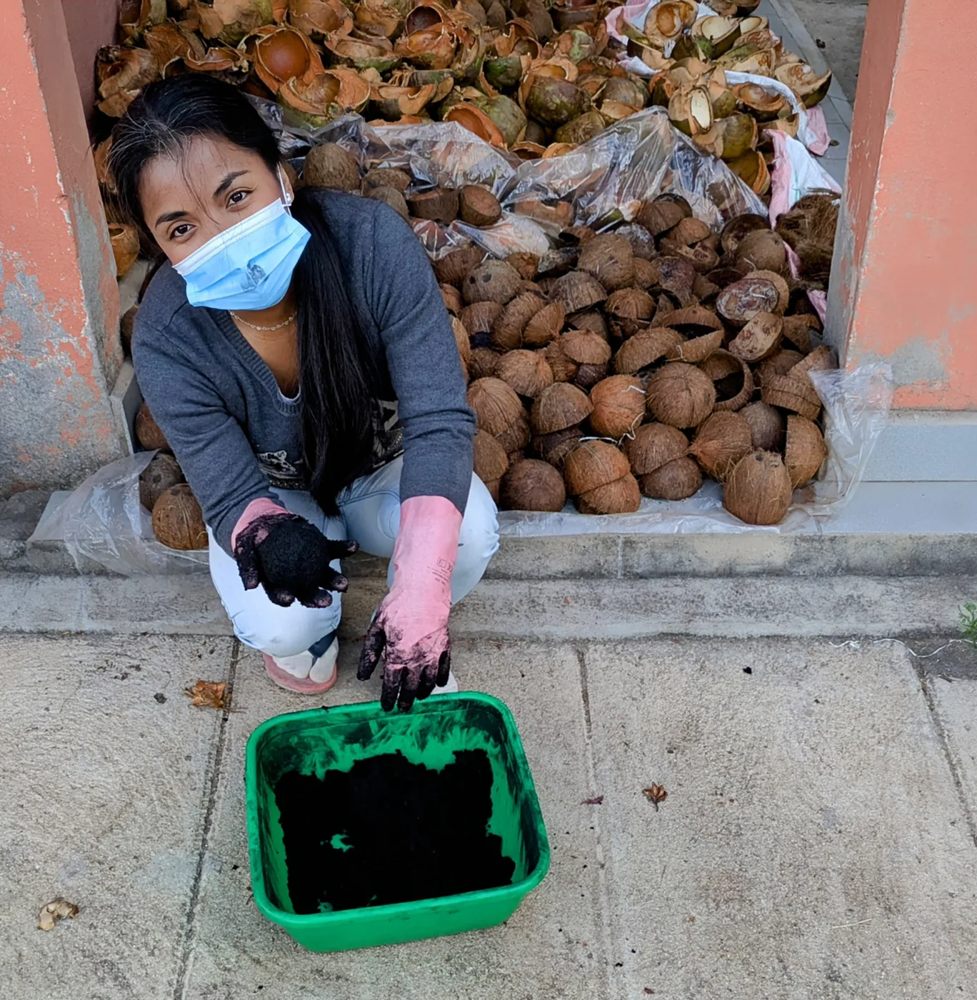
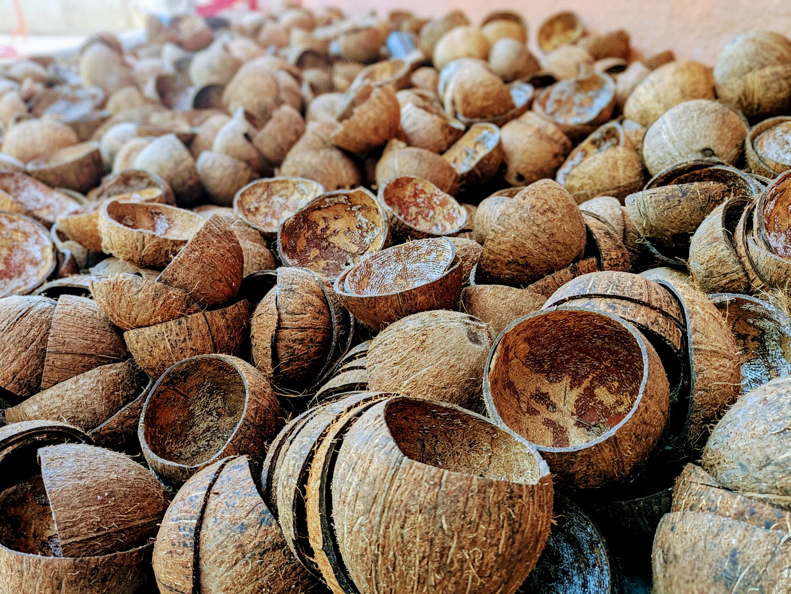
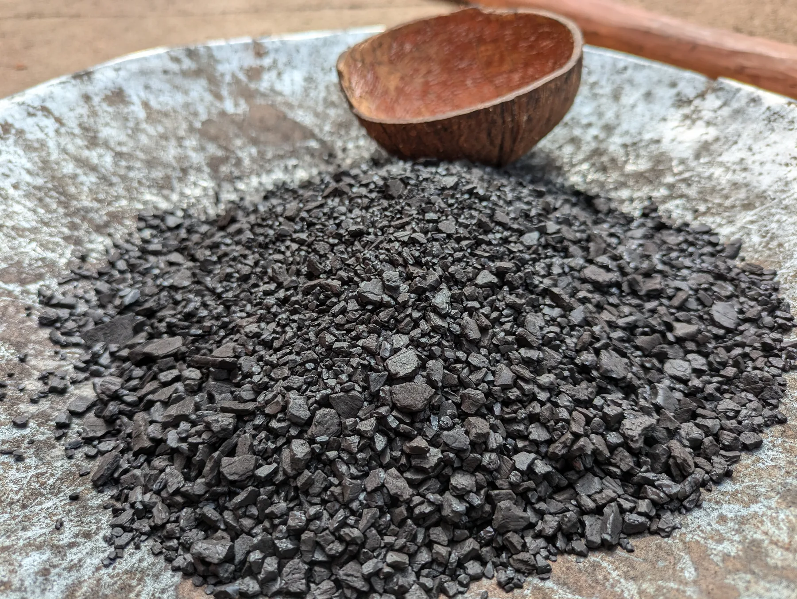
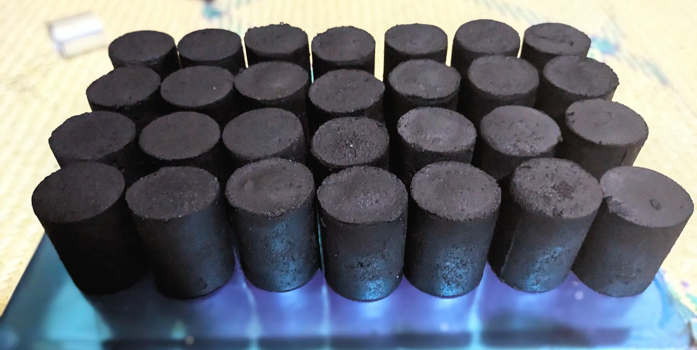
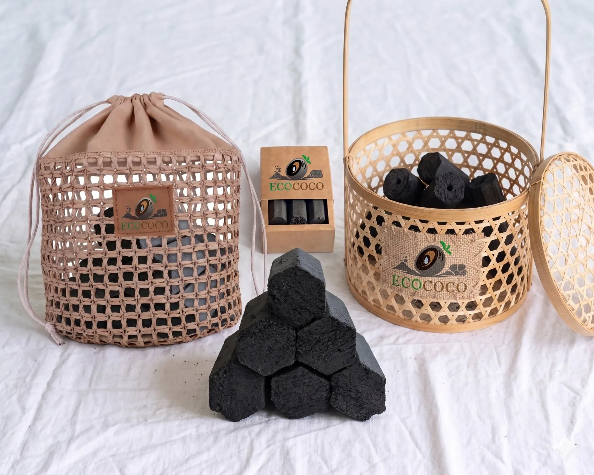
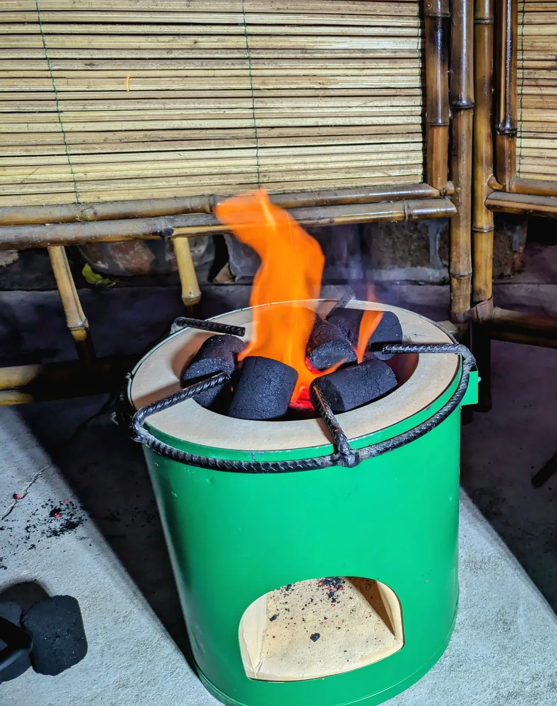
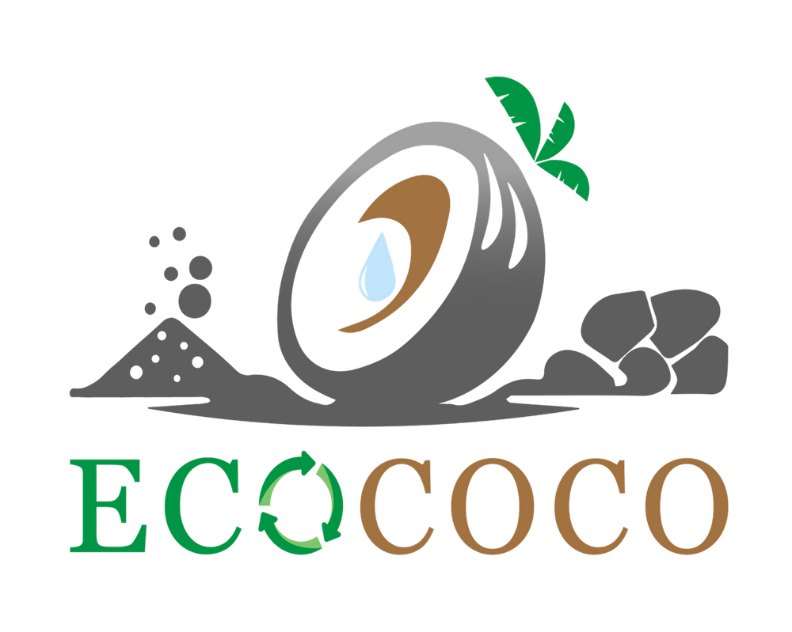

Lutter contre la déforestation
Les briquettes EcoCoco substituent progressivement une ressource issue de déchets agricoles au charbon de bois traditionnel.

EcoCocoEntreprise privée malgache - SARL à impact
Un monde plus vert, une vie plus saine.
Transformer un déchet en énergie. Préserver les forêts. Créer des opportunités locales.
Qui sommes-nous ?
EcoCoco est une entreprise privée malgache constituée en SARL. Sa vocation est environnementale, sociale et économique : valoriser les coques de noix de coco, un déchet agricole abondant, pour produire des briquettes combustibles écologiques destinées à la cuisson domestique, aux cantines, aux restaurateurs, aux acteurs institutionnels et aux usages professionnels.
Dans un pays où le charbon de bois reste central dans la cuisson, EcoCoco propose une réponse locale : réduire la pression sur les forêts, limiter l’exposition aux fumées et améliorer le budget énergie des ménages grâce à une combustion plus longue et un pouvoir calorifique élevé.

Les briquettes EcoCoco substituent progressivement une ressource issue de déchets agricoles au charbon de bois traditionnel.
Le produit vise une cuisson plus propre : moins de fumée, moins de poussière noire, très peu de cendres après combustion.
Les hypothèses techniques EcoCoco retiennent une durée de combustion environ 1,5 fois supérieure au charbon classique.
Collecte, transformation, conditionnement et distribution créent des opportunités pour les communautés et artisans locaux.
Ce que nous offrons
Qui sont les promoteurs ?
EcoCoco est porté par une équipe structurée autour de la stratégie, de la gouvernance, des finances, de l'environnement, des procédés chimiques et de la communication.
Contribution aux ODD
Où en sommes-nous ?
Le projet est aujourd'hui en phase de montée en échelle : entreprise structurée, premiers financements obtenus, matière première disponible, prototypes validés et ligne de production en cours de complétude.

Stock initial constitué, fournisseurs déjà actifs et discussions avancées avec des acteurs de la filière coco pour sécuriser la montée en charge.

Essais sur la matière, tests de carbonisation en four local et recherche d'une solution transitoire puis durable pour l'industrialisation.

Développement de prototypes de briquettes avec retours utilisateurs positifs, température élevée et combustion longue.

Échanges avec des artisans locaux pour un packaging écologique et premières intentions de commandes différées jusqu'à stabilisation de la capacité de production.
Reconnaissance et partenariats
Notre destination
La prochaine étape consiste à franchir le cap entre phase pilote et production régulière : compléter la ligne de production, sécuriser un local industriel, installer une solution fiable de carbonisation et structurer la distribution vers les ménages, cantines, restaurateurs et institutions.

Structuration opérationnelle, tests produit, coordination commerciale et administrative.
Zone de mobilisation de coques et de construction progressive d'une chaîne d'approvisionnement.
Nouvelle zone pressentie pour organiser une filière locale autour de la ressource coco.
Opportunités de collaboration
Impact projeté de la production initiale
Selon les hypothèses techniques EcoCoco, cette production initiale représenterait environ 15 tonnes de bois sec évitées par mois, 75 arbres préservés par mois et 42 ménages entièrement alimentés en substitution annuelle du charbon.

4. Contactez-nous
Partenaires techniques, bailleurs, distributeurs, institutions, cantines, restaurateurs ou acteurs de la cuisson propre : parlons des prochaines étapes d'EcoCoco.